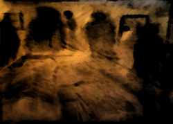

Shadow people (also known as Shadow men, Shadow folk or Shadow beings) are said to be shadow-like creatures of s upernatural origin which appear as dark forms in the peripheries of people's vision and disintegrate, or move between walls, when noticed.
Reports of shadow people are similar to ghost sightings, but differ in that shadow people are not reported as having human features, wearing modern/period clothing, or attempting to communicate.
Witnesses also do not report the same feelings of being in the presence of something that 'was once human.' Some individuals have described being menaced, chased, or (more rarely) attacked by shadow people. There have also been reports of shadow people appearing in front of witnesses or lingering for several seconds before disappearing. Witnesses report that encounters are typically accompanied by a feeling of dread.
Most accounts of shadow people describe them as black humanoid silhouettes with no discernible mouths, noses, eyes, or any expression whatsoever, though purported witnesses have also described child-sized humanoids or shapeless masses. Some reports also include glowing red eyes. Generally, they are described as lacking mass, though their specific nature varies from a two-dimensional shadow to a vaporous or distorted three-dimensional form.
Their movement is often described as being very quick and disjointed; they may first move slowly, as if they were passing through a heavy liquid, and then rapidly "hop" to another part of a witness's surroundings.
Some witnesses describe this movement as though the shadow entities they have seen "danced" from one wall to the next, or as moving around the room "as if they were on a specific track". Some accounts differ from the above and instead describe a completely black creature with red eyes, a cloak, and a gentleman's hat. This variation has become known as "The Hat Man".
The Pasta
Those little flickers of darkness you see out of the corner of your eye? Those aren’t just spots, or dust, or a trick of light. Maybe they’re ghosts, as some people believe, but I’m convinced they’re the Shadow People – beings from a dimension close to our own, but not able to be seen when we focus fully on them.
I have always been able to see the Shadow People. When I was young, my mother had my eyes checked by several different optometrists because I complained about the things I saw. I learned to keep quiet about them, but it took a while.
My first encounter with them took place when I was three or four years old. We lived in a high rise flat with a sweeping view of the hills and the city below us. My best friend at the time, Michelle, was over on a play date; her family lived across the landing and we spent more time together than apart. That day, she greeted me by running into my room, fueled by a ridiculous burst of enthusiasm.
“We have to play with my new dolls!” she screeched at me. I was much more into dinosaurs and bugs, and that sounded like a terrible way to spend an afternoon.
“No,” I insisted. “We have to play imagination! Godzilla vs. the killer wasps!” I tried to stomp around the room and look menacing.
Michelle huffed and disappeared. She was much faster than I was, and I wasn’t very good at finding hiding people, but for all that, I should have seen her when I turned the corner—and I didn’t.
Then I saw a shadow lurking at the corner of my vision. Thinking it must be Michelle, I turned towards it, calling her name. There was no answer, and the shadow continued to dance and dart out of range of my direct stare, as if it were avoiding making eye contact with me.
As the years went by, I began to believe that the Shadow People were my friends, or even my protectors, like guardian angels. But then the nights became terrifying. I started to see the Shadow People in the real shadows of my room. Many of them darted away when I tried to stare at them, but others hung around in the corners, clustering like cobwebs.
Then the noise started.
It was like wind caressing leaves until they whispered. It was a language I couldn’t comprehend, words I knew I would never understand unless I was somehow in their dimension. As the whispering grew more frenetic, the Shadow People began to come together and move towards me.
I bolted to my parents and shook them awake. Of course, they didn’t believe me, trying to coax me into believing it was just a dream or my imagination.
I know it was the Shadow People. And if you see a shadow within the shadows, or a shape flitting at the edge of your vision, you may not be alone.